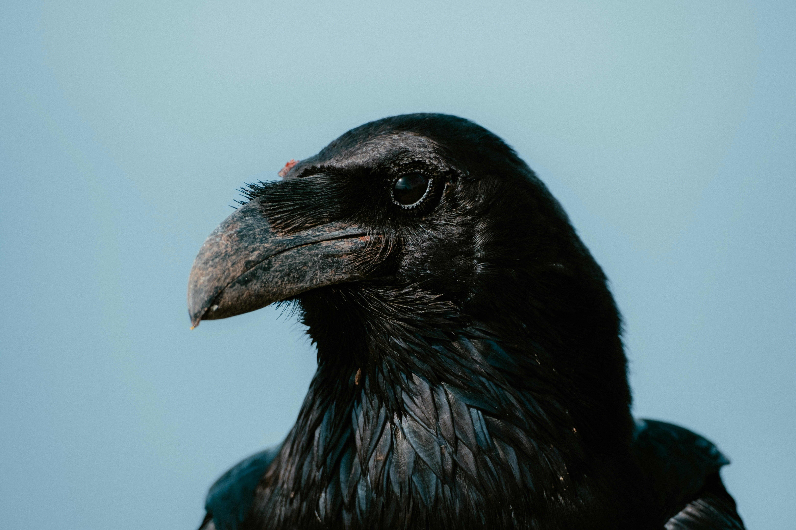
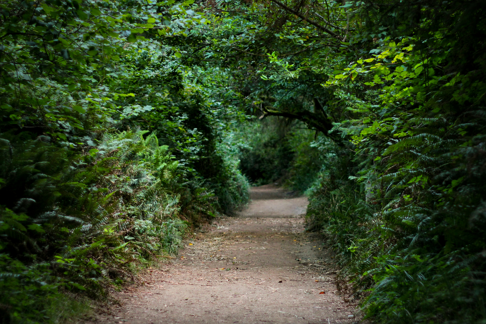
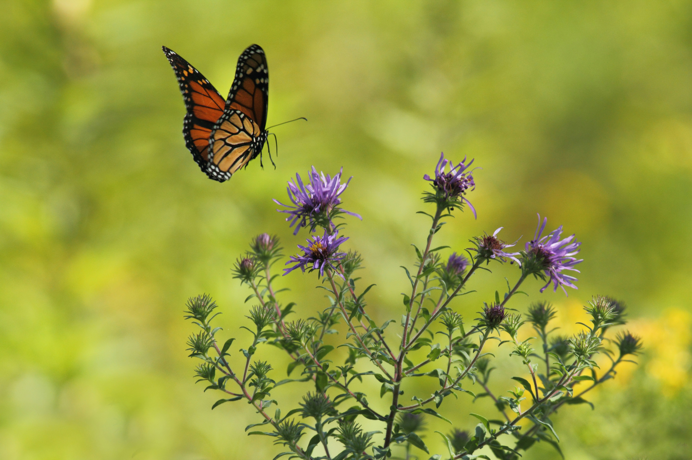
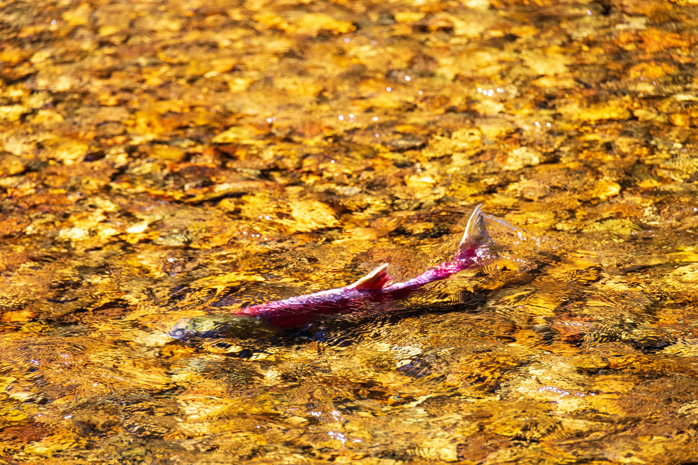
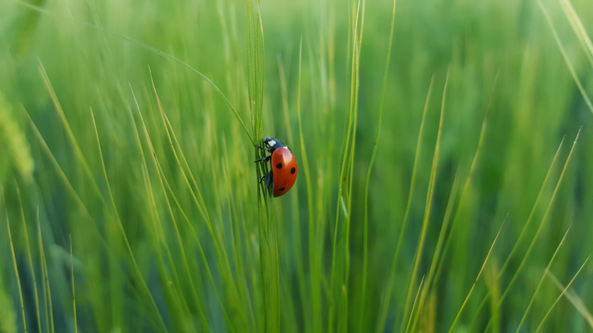
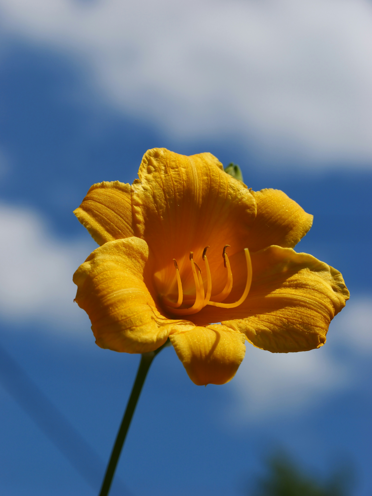
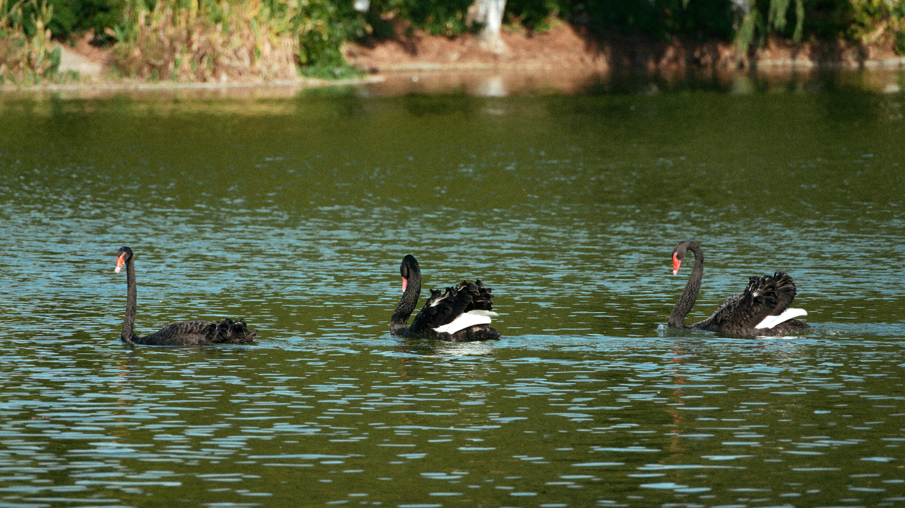

duḵwa̱la'masi x̱a ga̱la?
Do you see the grizzly bear?

Image by: Jessica Weiller
duḵwa̱la'masi x̱a g̱wa'wina?
Do you see the raven?

Image by: Joacim Lesne
g̱ilakas'la! Welcome to my website. Here you can learn some of the Kwak̓wala langauge. You will learn some words for animals, some questions, and some other words.

I see a butterfly.

I see a salmon.

Image by: Jessica Weiller

Image by: Joacim Lesne
Search the First Voices website here to answer the questions.

What colour is this?

What colour is this?

How many birds are there?